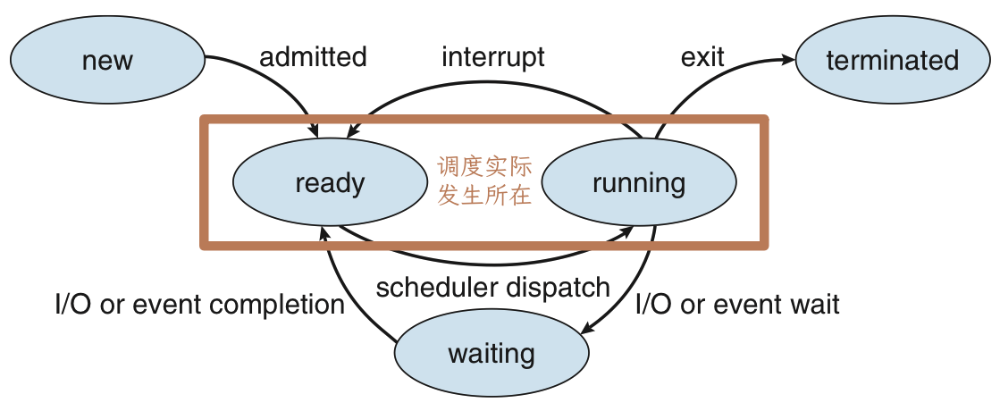
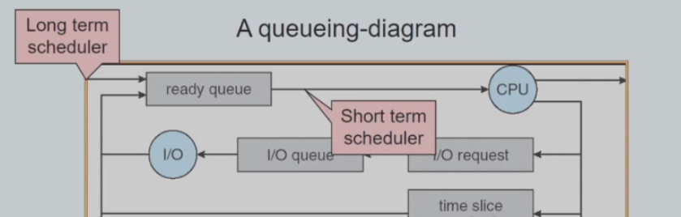
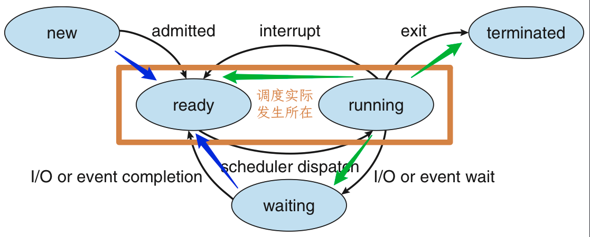
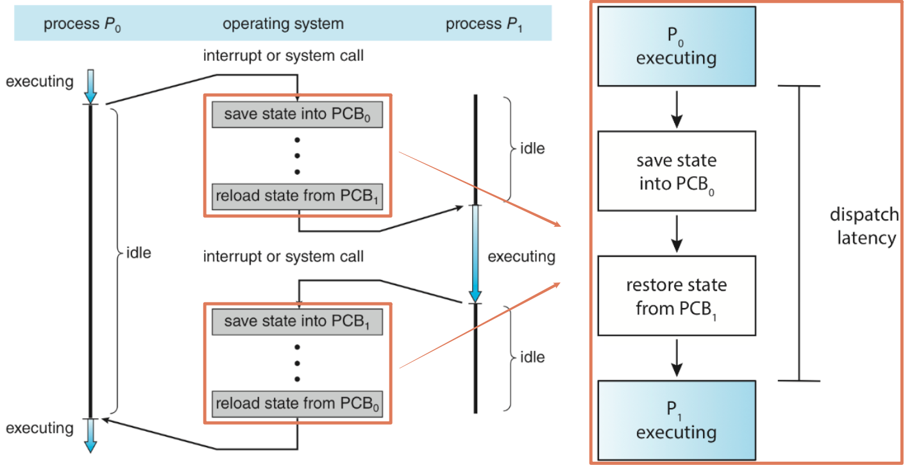
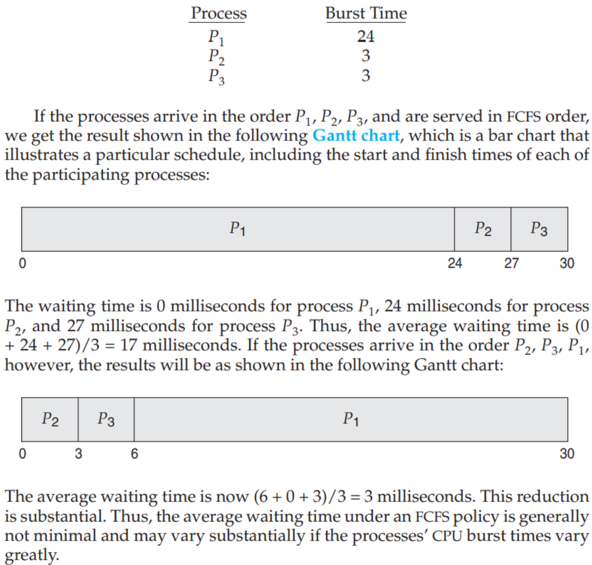
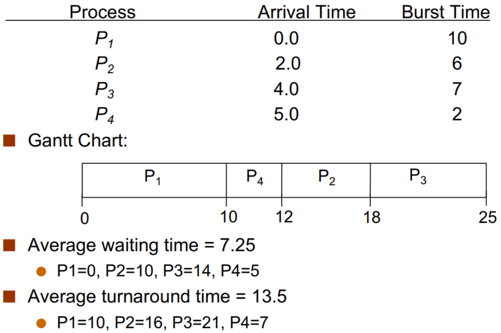
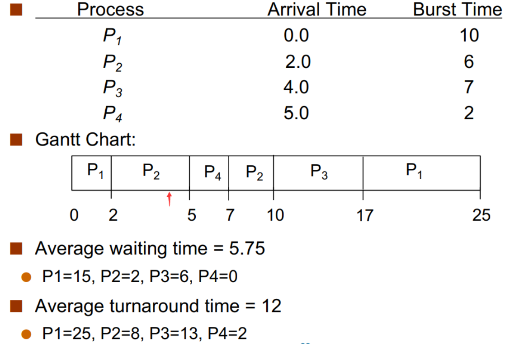
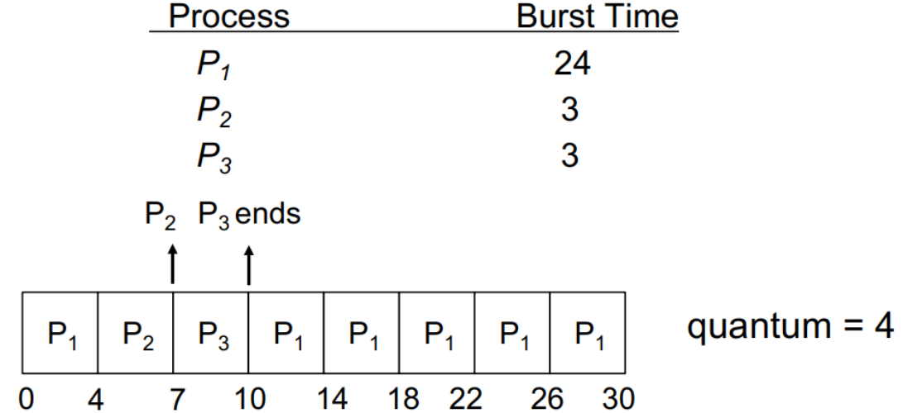
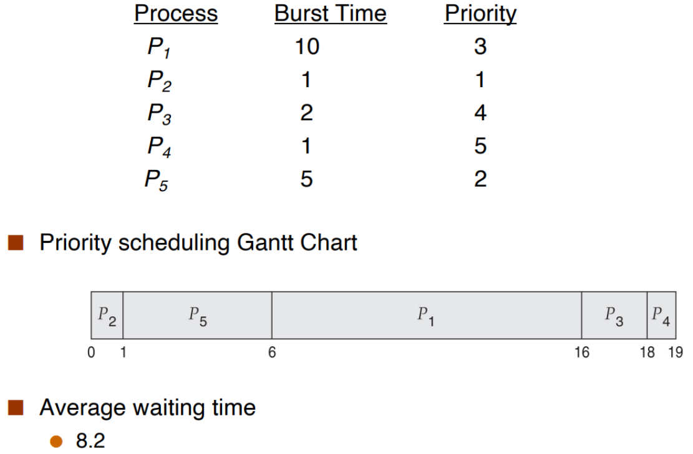
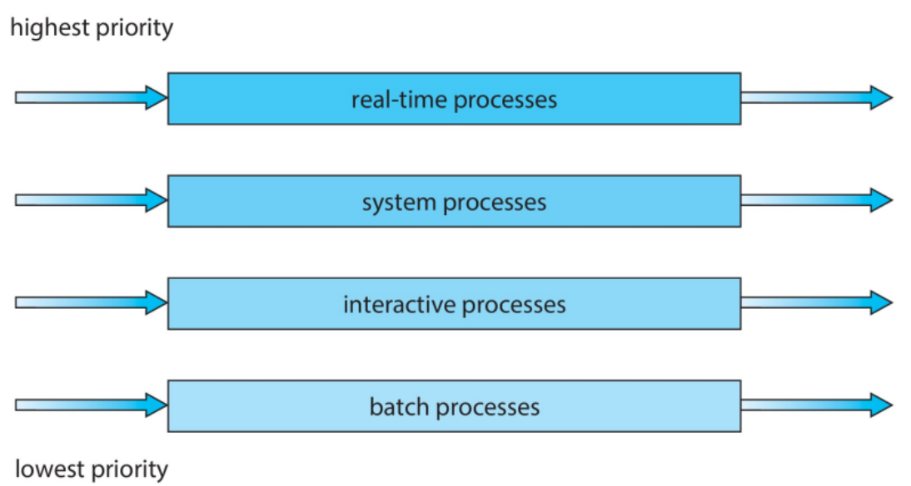

DECK: CS::OS
就绪队列(ready queue)和等待队列(wait queue) flashcard
实际上换进程就是换PCB的指针位置放到哪个队列（kernel负责移动）

- ready quene（里面的process都处在ready状态）（ CPU等待队列：）
- 实际实现中，由于等待的io或者事件不同，可能维护多个等待队列。
- IO设备等待队列：device queue 等待完用好IO设备之后PCB被移走

- 不需要等待其他设备也不需要使用处理器的进程？：空闲状态、将要结束的状态等，这样的进程就不会出现在上述队列中，会被放在job queue（系统中所有进程都在其中）
进程状态state flashcard
进程在execute时会改变状态。一个处理器上只有一个进程可以running。
- new
- 进程正在创建过程中，包括申请 PCB，分配初始资源等；
- running
- 进程正在运行（正在使用CPU资源）
- 有几个核就最多有几个进程处于running状态
- waiting
- 进程正在等待某个事件的发生，比如调用systemcall之后进程暂停的状态/IO操作中/其他event
- 此时即使有空余的 CPU 资源，该进程也无法继续
- 一般进程从running到waiting是主动的（系统调用之类 ），离开waiting进入ready是被动的
- ready
- 进程已经准备好了只差CPU资源，一旦有CPU资源可以分配给该进程，就会变为running态（等待 CPU 资源的派发(dispatch)，接受调度）
- 如果有进程ready 说明一定有进程正在running
- CPU 调度实际上指的就是若干进程在ready和running之间的切换，当发生了 interrupt，如计时器到时间了，running就会切换到ready
- terminated
- 进程因为某些原因终止，结束运行，需要释放资源；
- interrupt触发后，本来要执行的指令被中断，os陷入到kernel中，在进行中断处理的时候，发现允许进程处理的时间片到了，那么就需要把这个进程换下来换成别的进程。原本的那个进程进入ready的状态。
- scheduler dispatch 调度程序，决定下一个将要运行的进程
- waiting不能直接进入到runing必须经过ready
调度
scheduler类型 flashcard

long-term scheduler：（job scheduler）- 历史上的概念，主流操作系统里面已经没有了，现在实际上就是用户自己在担任这个角色。选择哪个processes需要从硬盘进入memory（the ready queue）
- 如果允许太多io bound的进程进入cpu 那么就会阻塞在io queue里面，那么cpu就得不到有效的使用，因为等待io的进程太多，而准备运行的进程太少
short-term scheduler（CPU scheduler）- 多道 (multiprogramming) 环境下，进程的个数通常大于 CPU 的个数。CPU 调度就是 OS 关于哪个 ready 进程可以运行（使用 CPU）以及运行多久的决定。
medium term scheduler- 主内存严重不足时，需要将优先级较高的进程先加载到RAM（主内存）中。
- 换到外存（硬盘）中（wipe out）之后状态仍然是waiting，当接收到所需的用户输入之后，会被考虑重新换到内存中。
进程类型
- I/O-bound (I/O 密集型): 这种程序大部分时间都在“等待”。比如等待网络数据、等待读取硬盘文件。它只需要 CPU 算一小会儿，然后就去等待 I/O。
- CPU-bound (计算密集型): 这种程序是需要 CPU 一直不停地算很久，很少需要等待 I/O。比如视频渲染、科学计算。
一个好的操作系统会混合搭配这两种程序，确保 CPU 和硬盘/网络都能保持忙碌，提高整体效率。
Title
- 主内存 就是内存，CPU工作的区域，而 RAM 是主内存的物理实现。
- 外存 SSD/HDD(硬盘)是外存的物理实现
- ROM 是一个完全不同的东西。它是一个小容量、只读、断电不丢的芯片，它的唯一工作就是在你按下开机键时，引导电脑去“外存”里加载操作系统到“主内存(RAM)”中
调度的时机 flashcard

scheduler调度
- 非抢占式调度(non-preemptive scheduling) running的进程由于某些原因需要主动离开running状态【绿色】
- 抢占式调度(preemptive scheduling) ready的某个进程需要立刻得到CPU资源【蓝色】
- 其他态转变为ready态来排队
- 或者在排队的时候某个人想插队（优先级调度 ）
- 非抢占式调度是由已经拥有资源的进程主动释放 CPU 资源引起的，而抢占式调度则是不占有资源的进程索取 CPU 资源成功引起的。
调度的过程：上下文切换 flashcard
由 CPU scheduler 选择哪一个ready态的将要被执行后，由 dispatcher 来完成具体的切换工作包括：
- 在两个进程间进行上下文切换(context switch，包括恢复现场、保证进程执行一致性的过程)
- 上下文：① CPU 寄存器中的值，② 进程状态，③ 内存的管理信息
- 切换到用户态；
- 跳转到用户程序中合适的位置以继续进程执行；
- 进程切换：包括被中断和systemcall两种
- 被中断 进入ready
- system call 进入waiting
- 而从 dispatcher 停止上一个运行时的进程，完成上下文切换，并启动下一个进程的延时，称为 dispatch latency。

调度算法
调度算法的评价指标(scheduling criteria) flashcard
- Maximize CPU Utilization
- CPU 使用率，CPU 使用时间 / 总时间。即 CPU 非空闲的时间比例
- 从 CPU 是否足够忙碌来看硬件性能是否充分发挥
- Maximize Throughput
- 吞吐量，每个时间单元内完成的进程数
- 从结果来看任务完成是否足够高效
- Minimize Turnaround Time
- 周转时间，从进程创立到进程完成的时间，包括等待进入内存、在 ready queue 中等待、在 CPU 上执行、I/O 执行等时间
- 通过观察最大周转时间，能反映调度的效率和“公平性”
- Minimize Waiting Time
- 等待时间，在 ready queue 中（或在 Ready 状态下）等待所花的时间之和
- 由于任务所需要的 CPU 时间、I/O 时间不受调度算法影响，所以抛开这些只看在 ready queue 中的等待时间，能反映调度算法的效率
- 等待时间 = 周转时间 - 运行时间
- Minimize Response Time
- 响应时间，交互系统从进程创立到第一次产生响应的时间
- 能反应交互式系统中调度算法的“及时性”
调度算法
以下调度算法存在理想化建模，以及以multiprogram为基础
First-Come, First-Serve (FCFS) | Nonpreemptive flashcard
先申请 CPU 的进程首先获得 CPU，用First-In, First-Out（FIFO）队列实现

Shortest-Job-First (SJF) flashcard
SJF 的核心想法是，让下一次运行时间最短的进程先来运行；根据数学知识，我们可以得知这样能得到最少的平均等待时间
- 对于非抢占式的系统来说，当我们忽略 I/O 等会进入 waiting 的情况（因为题目通常这样设计），进程「下一次运行时间」就是整个进程所需的总运行时间。
- 对于抢占式的系统而言，「下一次运行时间」实际上是进程的剩余运行时间，因为进程可能曾经被打断过。
因此我们将 SJF 进一步细分成了两种。
Non-preemptive: Shortest-next-CPU-burst
选取 ready queue 中下次 CPU 执行时间最短的进程。这样会使得给定的一组进程具有 minimum average waiting time.

- 在这个情景中，0s 时只有 P1 到达，因此 P1 先运行
- 由于是非抢占式的，因此 P1 运行过程中其他进程的到达并不会导致重新调度，P1 得以完全运行
- P1 结束时，剩余进程都已到达，处于 ready 状态，因此调度器从 ready queue 中选取 brust time 最短的来运行，以此类推。[一个进程运行结束后进行再调度]
Preemptive: Shortest-remaining-time-first(SRTF)
每当 CPU 调度时（注意抢占式调度的调度时机），选择最短剩余运行时间的进程。

- 在这个情境中，0s 时只有 P1 到达，因此 P1 先运行
- 但不同的是，由于是抢占式的，因此 2s P2 到达时也会引发一次调度，此时 P1 的剩余时间是 8s，P2 是 6s，因此 P2 优先运行
- 4s 时 P3 到达也引发一次调度，但此时 P1 的剩余时间是 8s，P2 是 4s，P3 是 7s，其中 P2 最短，因此仍然是 P2 继续运行[新进程到达时发生一次调度]
- 5s 时 P4 到达也引发一次调度，此时 P1 的剩余时间是 8s，P2 是 3s，P3 是 7s，P4 是 2s，其中 P4 最短，因此 P4 优先运行
- P4 运行结束时，ready queue 中 P1 的剩余时间是 8s，P2 是 3s，P3 是 7s，因此 P2 先运行，以此类推。
SJF 的两个版本都可以获得最小的平均等待时间，但最大的问题在于我们并不知道「下一次运行时间 」。解决方案是预测，将下次执行时间预测为此前 CPU 执行长度的指数平均。指数平均需要操作系统统计该进程此前的运行情况
Round-Robin (RR) | Preemptive flashcard
定义一个 时间片 (time slice / time quantum) ，即一个固定的较小时间单元 (10-100ms)。
- 除非一个 process 是 ready queue 中的唯一进程，它不会连续运行超过一个时间片的时间。
- Ready queue 是一个 FIFO 的循环队列。每次调度时取出 ready queue 中的第一个进程，设置一个计时器使得进程在一个时间片后发生中断，然后 dispatch the process。
 - 相比 SJF 而言，平均等待时间更长，但响应时间更短。
- RR scheduling 的性能很大程度上取决于时间片的大小。如果时间片较小，则 response/interactivity 会很好，但会有较大的 overhead，因为有较多的 context-switch；时间片较大则响应较差，但 overhead 会较小。
- 如果时间片无限大，则 RR≈FCFS。
- 在实践中，时间片大约 10~100ms，每次 contest-switch 约 10μs。即 context-switch 的时间花费是比较小的。
Priority Scheduling flashcard
每个进程都有一个优先级，每次调度时选取最高优先级的进程。（下例中规定优先级值小的优先级高）
优先级可以是内部的或者外部的：
- internal: 一些测量数据，例如 SJF 是 Priority 的一个特例，即优先级由预测 CPU 运行时间决定。
- external: 由用户指定进程的重要性。
- 要实现 Priority Scheduling，可以简单地将 ready queue 用 priority queue 实现；priority queue 也可以是抢占式或非抢占式的，如 SJF 一样。
- Priority 的一个重要问题是 indefinite blocking / starvation ，即低优先级的进程可能永远没有机会被执行。一个解决方法是 Priority Aging ，即根据等待时间逐渐增加在系统中等待的进程的优先级。
Multilevel Queue Scheduling flashcard
在实际应用中，进程通常被分为不同的组，每个组有一个自己的 ready queue，且每个队列内部有自己独立的调度算法。
- 前台队列使用 RR 调度以保证 response，后台队列可以使用 FCFS。
- 队列之间也应当有调度。通常使用 preemptive priority scheduling，即当且仅当高优先级的队列（如前台队列）为空时，低优先级的队列（如后台队列）中的进程才能获准运行。
- 使用队列间的 time-slicing，例如一个队列使用 80% 的时间片而另一个使用 20%。

Multilevel Feedback Queue Scheduling flashcard
Multilevel Feedback Queue Scheduling 允许进程在队列之间迁移。这种算法可以有很多种实现，因为队列的数量、每个队列中的调度策略、队列之间的调度算法以及将进程升级到更高优先级/降级到更低优先级的队列的条件都是可变的。一个系统中的最优配置在另一个系统中不一定很好。这种算法也是最为复杂的。
- 有三个队列 0, 1, 2，优先级逐次降低。
- 当进程 ready 时被添加到 Q0 中，Q0 内部采用 RR Scheduling，的每个进程都有 8ms 的时间完成其运行，如果没有完成则被打断并进入 Q1；
- 只有当 Q0 为空时 Q1 才可能被运行。Q1 内部也使用 RR Scheduling，每个进程有 16ms 时间完成其运行，如果没有完成则被打断并进入 Q2；
- 只有当 Q1 也为空时 Q2 才可能被运行。Q2 内部采用 FCFS 算法。